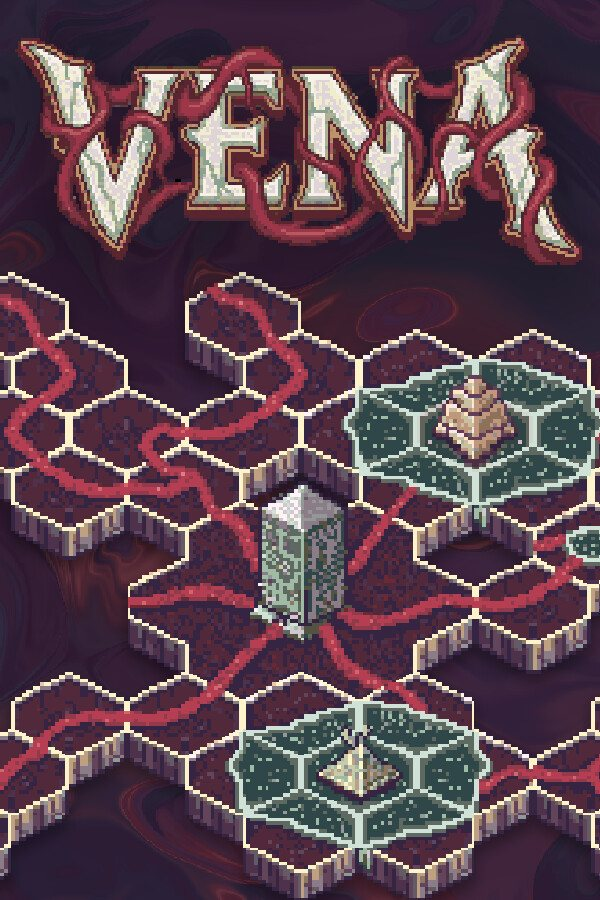
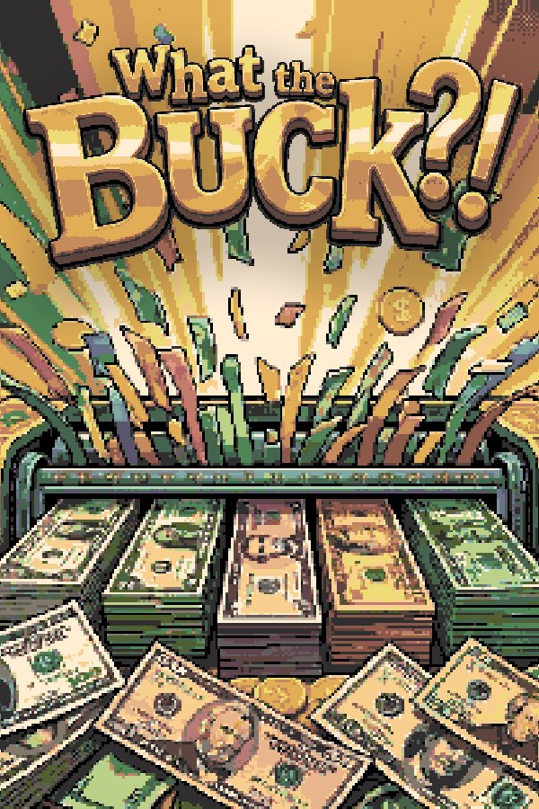
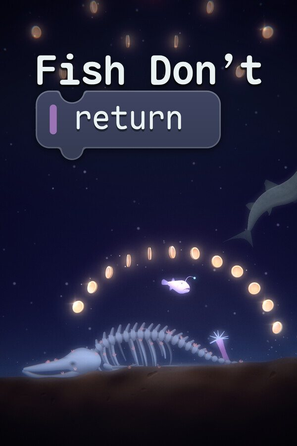

Presse
Alles hier darf frei für Berichte über die Spiele verwendet werden. Für Review-Keys, Interviews oder alles andere schreib an die Adresse unten.

Vena
- Genre
- Automation-Roguelike
- Erscheint
- 9. November 2026
- Preis
- Wird noch bekannt gegeben
- Plattformen
- Windows, macOS, Linux, Steam Deck
- Sprachen
- 29
- Demo
- Kostenlos auf Steam
- Auszeichnung
- Gewinner des Godot Wild Jam #85
Ein Automation-Roguelike, bei dem jeder Run in eine Sitzung passt. Platziere sechseckige Kacheln zu einem Produktionsorganismus, würfle im Shop um neue und wähle Perks für deinen Build. Überstehe neun Phasen, während der Hunger des Nexus dich überholt.

What the Buck?!
- Genre
- Incremental Game
- Erscheint
- 9. November 2026
- Preis
- Wird noch bekannt gegeben
- Plattformen
- Windows, macOS, Linux
- Sprachen
- 31
- Demo
- Kostenlos auf Steam
- Entwickler
- kohlgames
What the Buck?! ist ein Incremental Game, bei dem es darum geht, Geld zu zerstören. Zerschmettere Geldstapel, verbessere deine Zerstörungskraft, entdecke spielverändernde Skilltree-Upgrades, nutze das Prestige-System und erlebe das pure Dopamin explodierender Zahlen.

Fish Don’t Return
- Genre
- Block-Programmierung, Erkundung, Mystery
- Erscheint
- Demnächst
- Preis
- Wird noch bekannt gegeben
- Plattformen
- Windows, macOS, Linux, Steam Deck
- Sprachen
- Englisch, Deutsch folgt
- Steuerung
- Maus und Tastatur
Programmiere Fische, die den tiefsten Graben der Erde erkunden, mit Blöcken, die sich wie einfache deutsche Sätze lesen. Lies den Code der Raubfische dort unten und verbessere deine eigenen Programme. Irgendwo am Grund liegt das Wrack eines Schiffes, das 1966 gesunken ist.
Das Studio
- Studio
- Loerting Games
- Gründer
- Leonhard Kohl-Lörting
- Sitz
- Tirol, Österreich
- Engine
- Godot 4
Loerting Games ist ein unabhängiges Spielestudio in Tirol, Österreich, gegründet von Leonhard Kohl-Lörting, der an der Universität Innsbruck Informatik studiert hat. Vena ist aus einem Game-Jam-Prototyp entstanden und die erste kommerzielle Veröffentlichung des Studios.